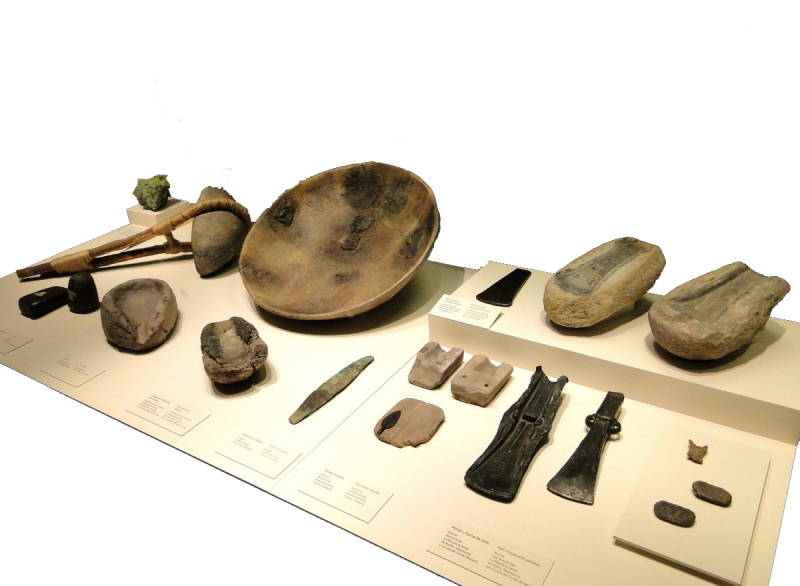

Tema 1.1
Introducción a las Máquinas-Herramienta
Maestro: Francisco Ruvalcaba Grandos
Introducción a las Máquinas Herramienta
Introducción a las Máquinas Herramienta
El progreso de la humanidad a través de los tiempos ha estado regido por el tipo de herramientas disponible.
Con la revolución industrial de mediados del siglo XVIII, se desarrollaron y se mejoraron con-tinuamente las primeras máquinas-herramienta.
Las computadoras afectan el cultivo y la venta de alimentos, los procesos de manufactura, e incluso el entretenimiento.
Aun cuando la computadora tiene influen-cia en nuestra vida diaria, es importante que cada quien sea capaz de llevar a cabo operaciones básicas en máquinas-herramienta convencionales.
Historia de las Máquinas
Historia de las Máquinas
LA HISTORIA DE LAS MÁQUINAS-HERRAMIENTA COMENZÓ EN LA EDAD DE PIEDRA (hace más de 50,000 años)...
- Herramientas manuales
- De madera, piedra, hueso,....
- Después se reemplazó por bronce s
Historia de las Máquinas
De los años 4500 y 4000 a.C.
- lanzas y hachas de piedra fueron reemplazadas con implementos de co-bre y de bronce.
- Fuerza humana fue sustituida casos por fuerza animal
- Edad de bronce
- Humanos gozaron por primera vez de herramientas "con potencia motriz"